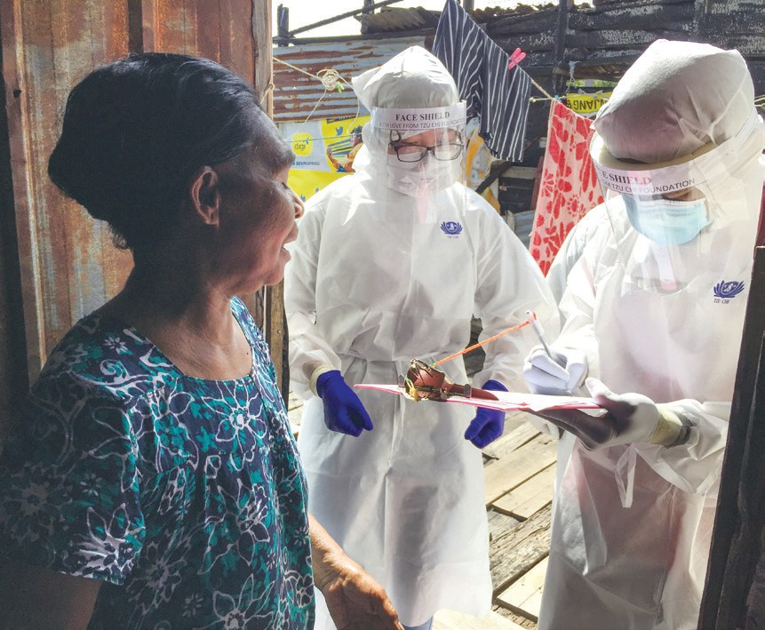
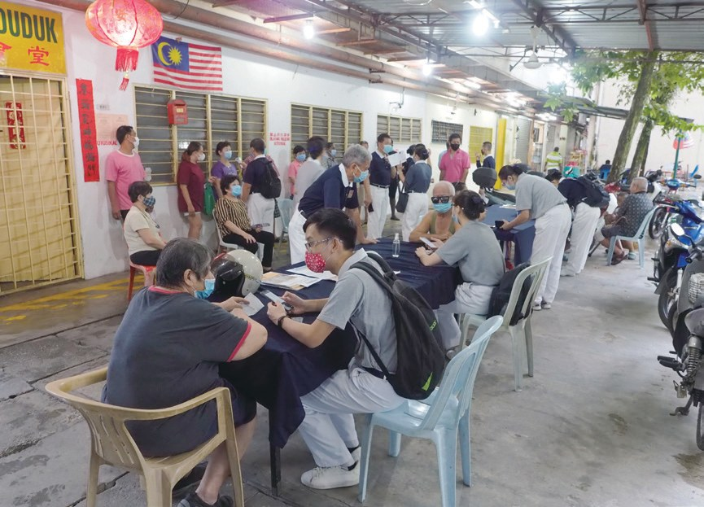
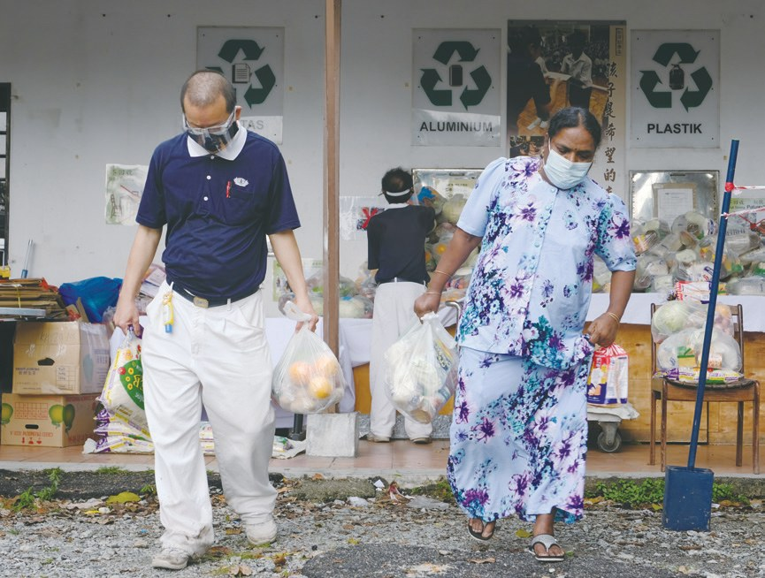
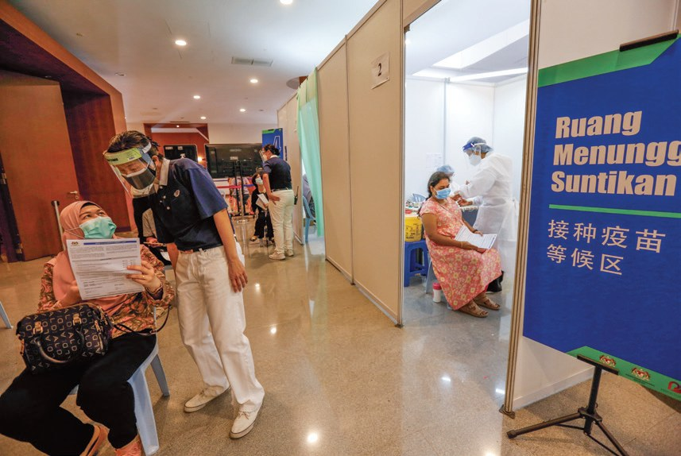
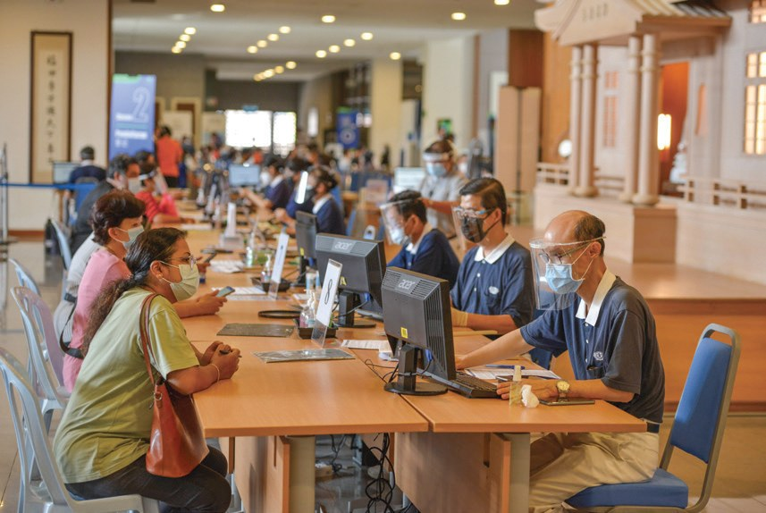
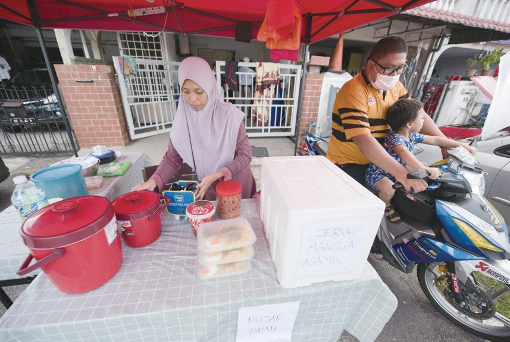
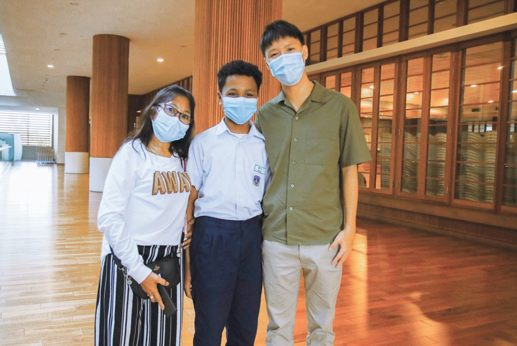
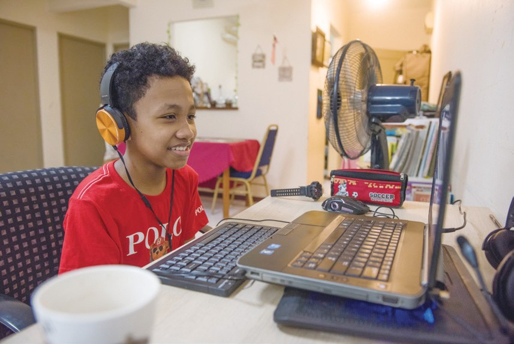
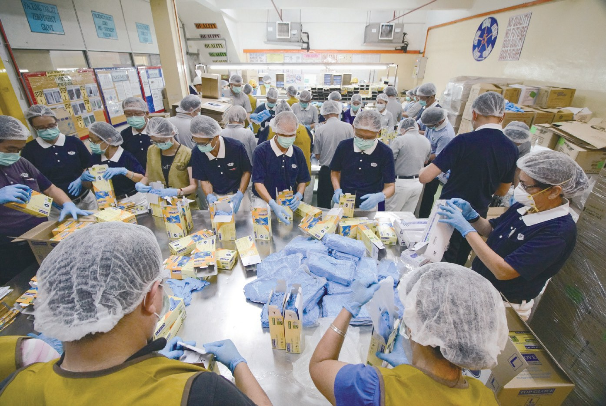

靈方妙藥
大哉教育（下）
很多人突然沒了工作，誰來接住他們？

先別急著下結論，讀完再說說你的想法～
下篇講疫情裡的生活紓困：慈善專線、「我們都是一家人」紓困計劃、送孩子上網課的手機電腦，還有靜思堂變成疫苗接種中心。
最後是兩個家庭的故事：一位被裁員的父親，和一個不敢開口的孩子。
下面是原書的節錄，紅色底線是我們替你標出的轉折點。
讀之前：疫情封鎖時，你覺得一個窮困家庭最先撐不住的是什麼？
我們都是一家人
八十多萬人失業，慈濟怎樣一戶一戶找到需要的人？閱讀引導
馬來西亞失業率高達5.3%，逾八十二萬人失業。
但是，外籍勞工、難民、無國籍人士本處弱勢，更是雪上加霜。

疫情更是雪上加霜。

並且補助社會赤貧族群，非公民佔了96%，公民佔4%，關懷補助超過兩萬八千戶次。
不論公民或非公民都可以通過慈善Careline專線進行申請，所有申請者都會經過電訪和評估。
沒有銀行戶口的人，如印尼外勞、無國籍人士，志工會親自前往發放現金及物資。

志工就親自送去。
截至2021年10月31日，雪隆、彭亨及東馬各地累積接獲18,548通求援……

求救電話！
Kita 1 Keluarga源自馬來文，意即我們都是一家人。

雪隆分會共收到4,381份的線上申請，動員了10,769人次志工進行家訪，被核准者從9月至11月可以請領300至800令吉的援助金。
猜一猜閱讀引導
2.0 版紓困計劃，通過的每一戶，志工要去家訪幾次？
在雪隆大水災發生的同時，志工依然堅定完成使命，在2022年農曆新年前完成第一次的家訪……
一邊還在家訪！
屋外掛上白旗
上網課沒有電腦，家裡沒有飯吃，怎麼辦？閱讀引導
受到疫情影響，學生的課程轉移到雲端教學，許多貧困的孩子因電腦設備的問題，無法參與線上課程。
截至11月，此計劃已嘉惠55戶家庭及26所學校，共贈予509臺智能手機、10臺平板電腦及55臺手提電腦等。

孩子能上網課了。
民間發起「白旗運動」，鼓勵極需援助者在屋外掛上白旗，讓有能力的人提供援助，或透過設立食物銀行，幫助有需要的人。
就是說「我需要幫忙」。
7月18日，雪隆分會四十個環保站與共修處啟動「慈濟Food Care社區關懷計劃」，每星期於定點發放糧食物資，以最直接的方式緩解民眾的經濟負擔。

「雖然上帝沒有來到我家，但是祂派了慈濟人來幫助我。我很認同小錢可行善的精神，接下來我每次載客，就要投一次竹筒。」
一位受惠者回饋・p.268載一次客投一次竹筒！
長久下來，孩子的學習差距就越來越大，漸漸對學習失去信心。
就越來越沒信心……
雪隆分會參考臺灣本會的「青年線上伴學趣」，籌辦「愛·伴學i·didik」計劃，於2022年1月3日至9月30日提供線上補習，讓弱勢家庭的孩子們在疫情期間也不失學。
截至2022年12月31日，此計劃惠及251位學生，動員111位補習老師及305位志工參與。
靜思堂變成接種站
很多人怕打疫苗、不會上網登記，志工怎樣幫忙？閱讀引導
2021年3月，全馬三千兩百萬人中，僅有六百四十萬人通過MySejahtera應用程式註冊接種疫苗。
只有六百多萬人登記。

吉隆坡慈濟靜思堂，作為疫苗接種中心，自6月11日試跑，6月19日開始每天運作。
體諒長者對疫苗接種有恐懼感，從報到、填寫資料、問診、接種到留觀區，全程都有志工及工作人員引導，耐心說明表格內容，安撫民眾的心。
更設有特別登記處，優先服務長者及行動不便者，縮短等候時間……
全程有人陪。

- 5,880人次非醫療志工（第一輪）p.271
- 8,892人加強劑接種p.271
- 14,444人次志工支援20個接種中心p.271
化危機為轉機
一位被裁員的父親，一個不敢開口的孩子。閱讀引導
四歲的長子是自閉過動兒，在特殊學校就讀。2020年3月疫情爆發，實施行動管制令，他被公司裁員，改行做快遞員。
伊斯旺很驚訝慈濟是佛教團體，卻不分宗教、種族助人……

「當我第一次拿到慈濟給的現值卡，我真的很開心，馬上給孩子買奶粉、尿片……」
伊斯旺感恩地說・p.272他決定在自家門口開一間小食攤，全家人齊心共度難關，不論多辛苦都堅持下去。

自己開小食攤！
「現在全世界人的命運都一樣，在病毒面前，沒有人可以擔保能躲避或倖免，我們唯一能做的就是勇敢面對。」
伊斯旺說・p.273不幸的是，羅莎林達在2015年患上腎病，為了醫病和洗腎，儲蓄都用盡了。

但令母親擔心的不是成績，而是勞今個性內向，難以融入學校生活。
「卓老師是我生命的貴人，讓我能敞開心，勇敢與同學交談，學習也變得更有趣了。」
勞今說・p.274
勞今被學校選派參加馬來文的詩歌朗誦比賽……
去參加詩歌朗誦！

他們還沒有來請求，我們自動去關懷，實在是非常不簡單！
上人開示・p.276停一停：誰讓你記住了？閱讀引導
選一位你印象最深的人。沒有標準答案。
有人開小食攤，有人敢開口了，有人一對一陪伴。哪一位讓你最有感覺？

一起回頭看看吧～
回望
依本章原文整理，每一條都標了原書頁碼。閱讀引導
背後原因
為什麼紓困不分身分

小川政府已經有援助，慈濟還要做嗎？
- 原本弱勢
外籍勞工、難民、無國籍人士原本就處於弱勢，疫情來了更是雪上加霜。p.264
- 慈善專線
不論公民或非公民都可以申請。p.265
- 一家人
Kita 1 Keluarga，意即我們都是一家人。p.265
後續發展
紓困計劃一路走來

小禾疫情兩年，志工推出了哪些計劃？
- 2020.3
設立慈善專線，接聽求助電話。p.264
- 2020.7
推出「Kita 1 Keluarga 1.0」紓困計劃。p.265
- 2021.6
e-Caring網課設備；靜思堂成為疫苗接種中心。p.267、p.271
- 2021.7
啟動「慈濟Food Care社區關懷計劃」。p.267
- 2021.11
再推「K1K 2.0」紓困計劃。p.265
- 2022.1
「愛·伴學i·didik」線上補習開課。p.269
善念共振
受助的人也付出
小禾被幫助之後，他們做了什麼？
- 第一圈伊斯旺
領養一個竹筒，默默許願：希望不幸快快過去。p.272
- 第二圈受惠者
每次載客，就要投一次竹筒。p.268
- 第三圈勞今
敞開心，勇敢與同學交談。p.274
以上只整理本章寫到的事；書裡沒寫到的，我們不替它下結論。
回頭看讀前的選擇閱讀引導
民間掛上白旗求助，慈濟每星期定點發放糧食（p.267）；孩子因電腦設備無法上網課，慈濟送上手機電腦（p.267）；伊斯旺領了現值卡，後來自己開小食攤（p.272–273）。三餐、上學、希望，志工一樣一樣接住。
為什麼還要領養竹筒？
只有你自己看得到喔！
準備好了就一起出發～